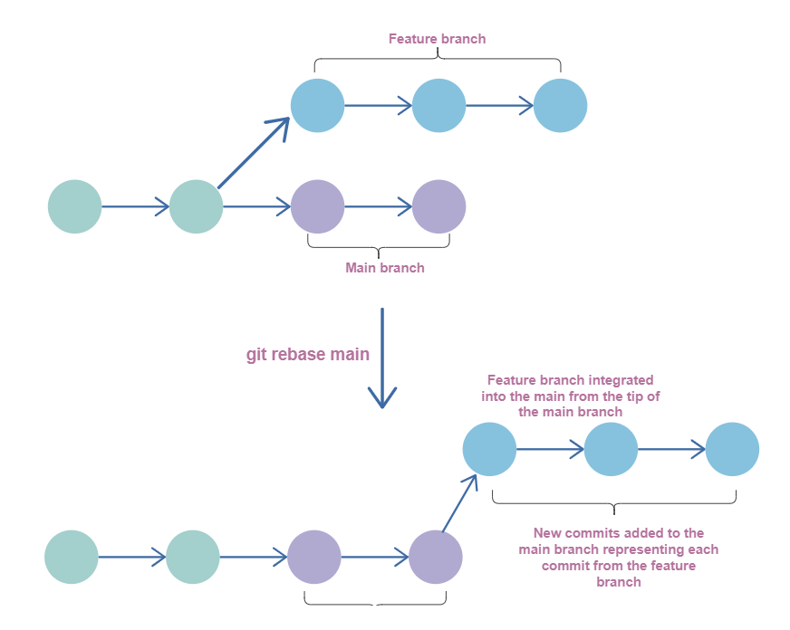

git rebase: Move the base of a branch
更改当前分支的根基
命令
git rebase -i [<upstream> [<branch>]]
| 参数 | 描述 |
|---|---|
branch |
默认停留在当前的分支, 如果指定branch, 则自动执行git switch <branch> |
<upstream> |
默认指向输入的<branch>, 如果不指定<branch>或<upstream>, 则会退出 |
应用
替换merge

更改指定提交的信息
假设有提交A-B-C-D-E-F, HEAD指向F, 需要修改C和D的 author.
-
git rebase -i B, 将C-D-E-F取出, 并将B作为base -
将
C和D之前的pick更改为edit -
退出编辑器(在
vim中是:wq) -
rebase会在C暂停 -
使用
git commit --amend --author="Author Name <email@address.com>"重新提交C -
再次执行
git rebase --continue -
rebase会在D暂停 -
git commit --amend --author="Author Name <email@address.com>"重新提交D -
rebae完成 -
git push -f更新origin
更改提交顺序
假设有提交A-B-C-D-E-F, HEAD指向F, 需要修改C和D的顺序
-
git rebase -i B, 将C-D-E-F取出, 并将B作为base -
C和D两行进行替换即可
合并多次提交
假设有提交A-B-C-D-E-F, HEAD指向F, 需要将C,D,E进行合并
-
git rebase -i B, 将C-D-E-F取出, 并将B作为base -
将
C,D,E之前的个pick更改为squash
分开一次提交
替代--amend
--amend只能合并上一次的提交, 而git rebase可以合并指定的提交
假设有提交A-B-C-D-E-F, HEAD指向F, 需要使用F的提交和C的提交进行合并
-
git rebase -i B, 将C-D-E-F取出, 并将B作为base -
将
F提交放在C后, 并将F前面的pick更改为fixup(修复上面的的)
--root
当我们进行3次提交后, 使用git rebase -i HEAD^3会报错, 因为第一个提交是root, 也就是说只能git rebase -i HEAD~2, root commit不能获得, 如果想获得, 需要执行git rebase -i --root
continue
git reabse --continue --abort
在使用-i交互模式时,处理conflict会中断,要使用–continue来恢复交互模式[1]
https://git-rebase.io/
https://www.educative.io/answers/what-is-the-git-rebase-branch-name-command
https://stackoverflow.com/questions/3042437/how-to-change-the-commit-author-for-one-specific-commit
https://git-scm.com/docs/git-rebase
测试 ↩︎